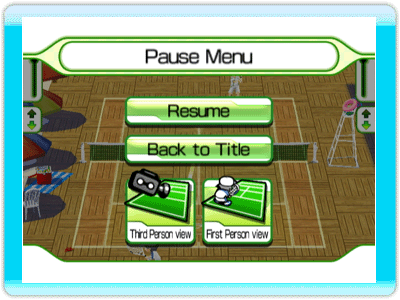

5 |
Controls |
 |
 How to use the controls in Family Tennis.
How to use the controls in Family Tennis.
Move the cursor using the Wii Remote's Pointer. ●A Button Press the A Button to confirm. ●B Button Press the B Button to return to the previous screen.
 ●Swing the Wii Remote Hit the ball by swinging the Wii Remote. Right to left = Forehand Left to Right = Backhand High to Low = Smash Low to High = Lob When the opponent lobs the ball high, your character will prepare to smash the ball. If you swing your Wii Remote at the right time, you can smash the ball at your opponent. ●A Button By holding down the A Button and swinging the Wii Remote, you can unleash a Super Shot. You can also use this technique when you are serving the ball. ●+Control Pad Press up on the +Control Pad to advance your character, and down to retreat. Between the time you hit the ball, and the opponent returns your shot, you can press left or right in the direction you think your opponent will hit the ball. If you guessed right, your character will be in position quicker than normal, but if you guessed wrong, it will take longer to get to the ball. ●- Button Displays the pause menu.
 ●Resume Exit the pause menu, and return to the game. ●Back to Title Quit the game and return to the title menu. ●Third Person view View the entire court from above. If there are multiple players, this will be the only view available. ●First Person view If there is only one player playing the game, this option will become available. It will seem as though you are playing as the character, and will make the game feel more realistic. |
 |
 |